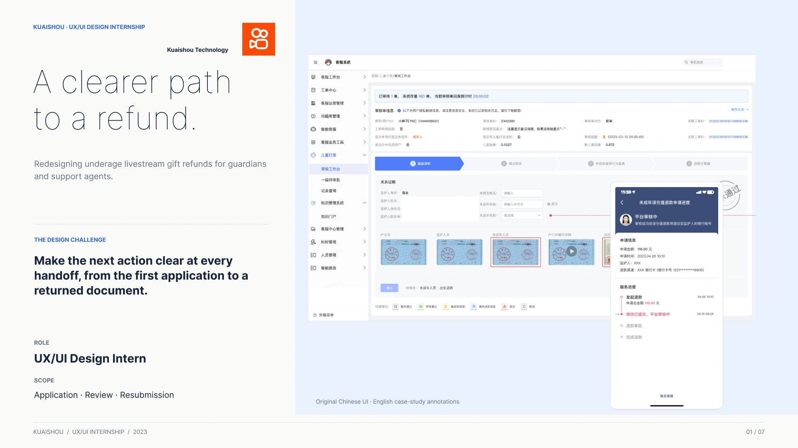
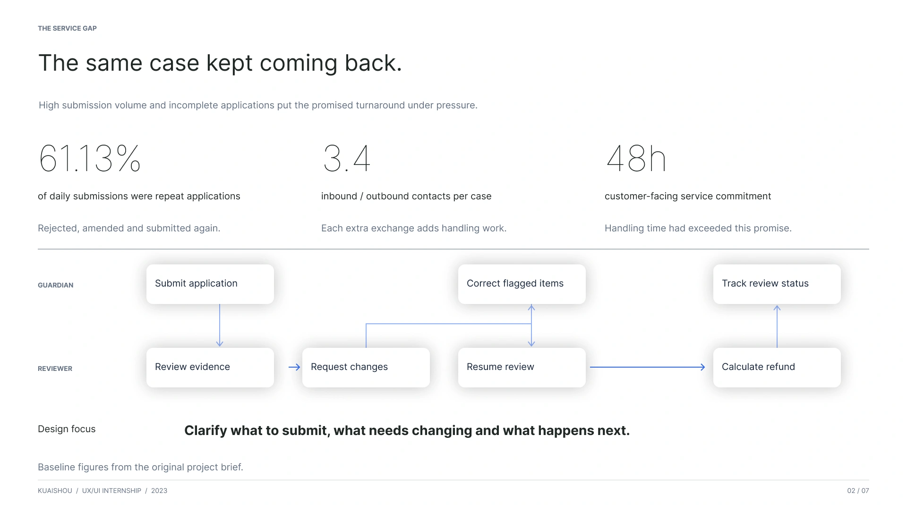
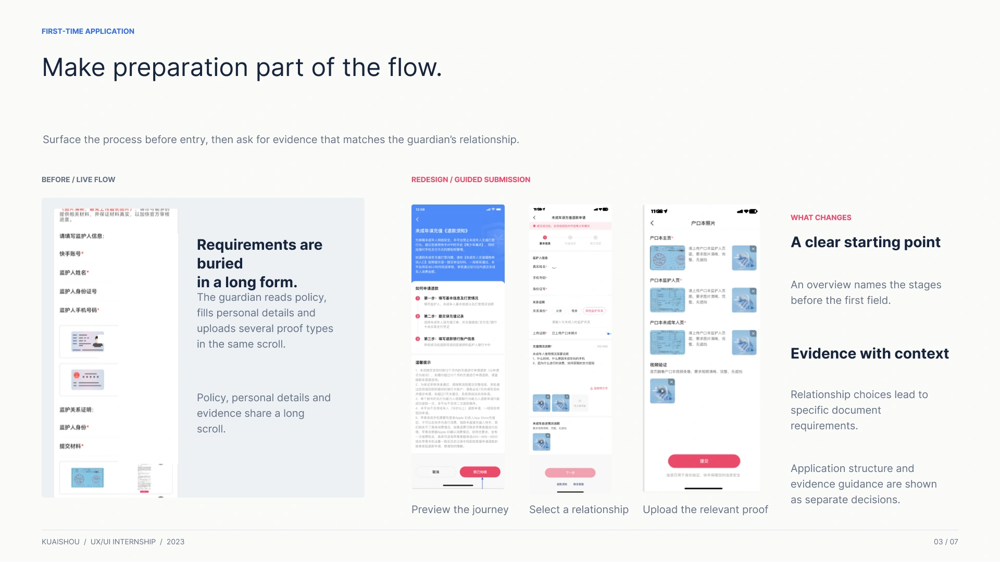
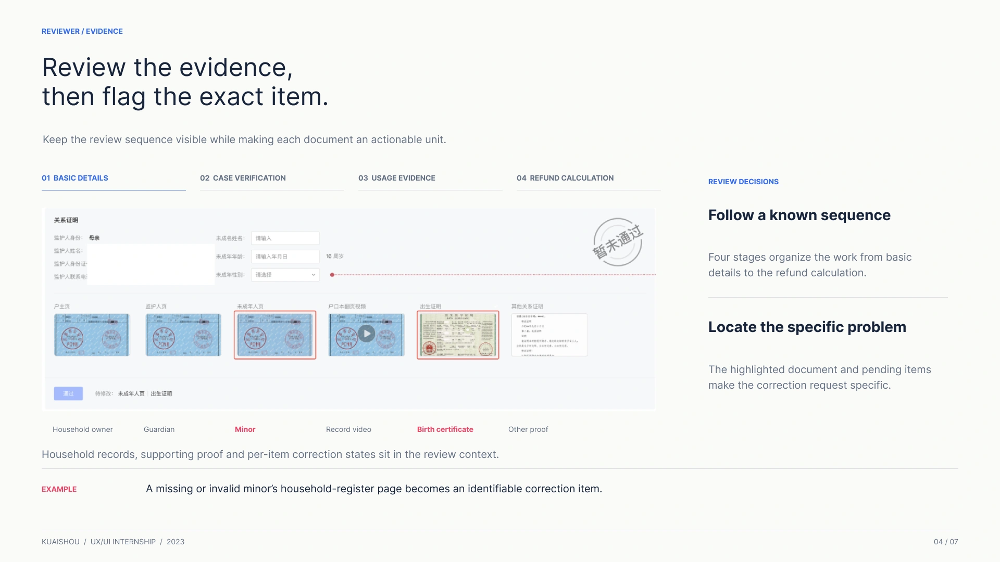
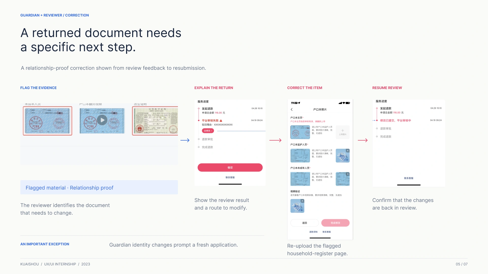
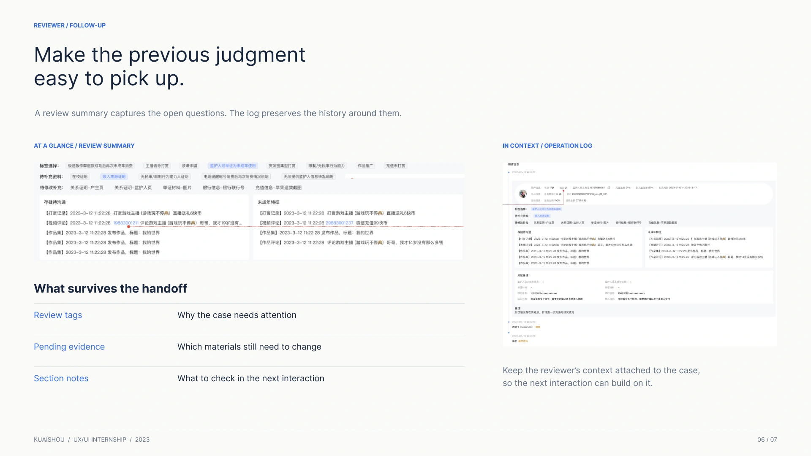
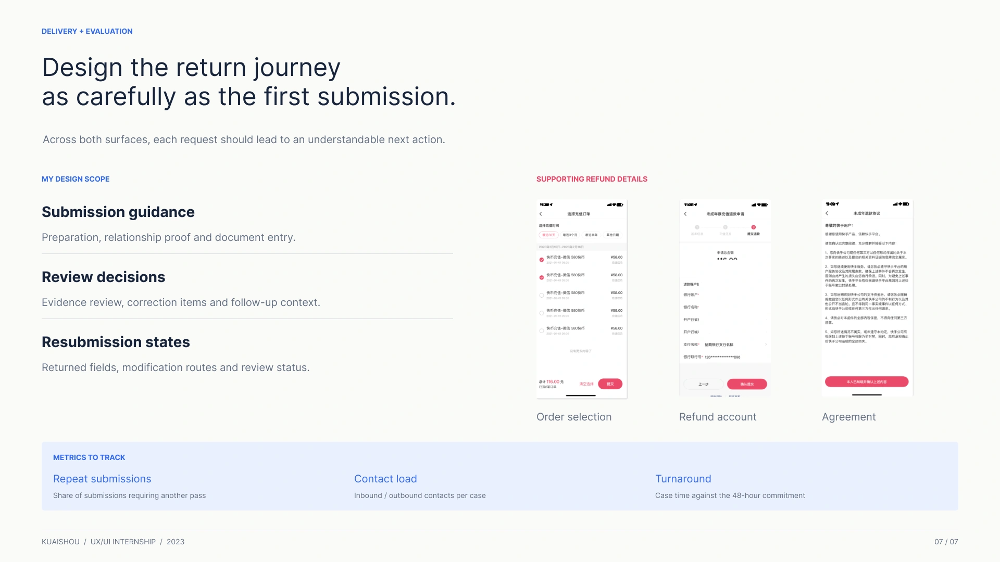

All work
A clearer path to a refund.
An internship case study at Kuaishou, redesigning the refund journey for gifts sent by minors during livestreams. The work connects first-time applications, evidence review, targeted corrections, and resubmission states across guardian-facing and internal support interfaces.
View full process





